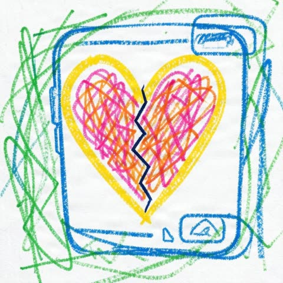

Vizcaya Sound · 2026-09-06
Friendzone
Lyrics
Alas-dose na naman, dilat pa rin ang phone
Puro shared reels at memes sa ating chatbox zone
Sabi mo kanina"Ang random mo talaga"
Pero bawat sabihin mo, tinatandaan ko pala
Nasa Close Friends mo ako, laging una sa view
Casual lang sa iba, pero bakit iba sa 'yo?
Kasi minsan, hawak-kamay pag tumatawid
Biglang bibitaw, parang walang pahiwatig
Normal lang ba 'to sa magkaibigan?
O ako lang 'tong naglalakbay sa kawalan?
Friendzone lang ba 'to o pwede nang I-level up?
Kasi 'tong puso ko, unti-unti nang nagka-crack
Ano bang basehan ng more than friends?
Bakit parang ako lang ang naghahanap ng blend?
Baka naman ako lang ang may nararamdaman
Habang sa 'yo, tropa lang talaga hanggang dulo ng kailanman
Hatid-sundo kita kahit malayo sa rota ko
Isang"Salamat, bestie" tagos agad sa dibdib ko
Yung mga tinginang medyo tumatagal nang bahagya
Binibigyan ko ng kulay, baka sakaling totoo na
Sinasadya mo ba, o sadyang malambing ka lang?
Kasi bawat"ingat ka" puyat ang kapalit sa 'king isipan
Friendzone lang ba 'to o pwede nang I-level up?
Kasi 'tong puso ko, unti-unti nang nagka-crack
Ano bang basehan ng more than friends?
Bakit parang ako lang ang naghahanap ng blend?
Baka naman ako lang ang may nararamdaman
Habang sa 'yo, tropa lang talaga hanggang dulo ng kailanman
Pagod na 'kong maging safe zone mo
Kung hanggang dito na lang, sabihin mo nang diretso
Ayoko nang mag-assume sa mga"what if" at"baka"
Bago pa tuluyang lumalim, kailangan nang linawin
Friendzone lang ba 'to o pwede nang I-level up?
Handa naman akong sumugal kahit medyo mailap
Gusto ko lang malaman kung saan ako lulugar
Bago ko tuluyang amining ikaw na ang mahal
Kasi baka naman ako lang ang may nararamdaman
Ano ba talaga?
Tropa lang ba, o higit pa?
(delulu na naman)